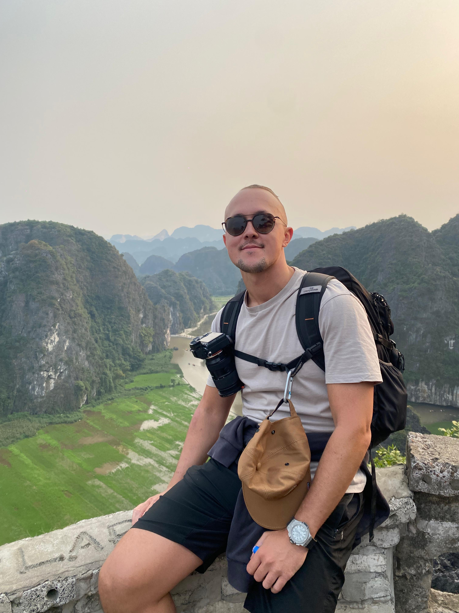

Welcome to my vision of life

I created my first videos at the age of 12, driven by a simple desire to create. Around the same time, I discovered scuba diving thanks to my father — a passion that has stayed with me ever since. Two years ago, I turned to photography and found the same intensity and sense of fulfillment. My many travels, often solo, have helped shape my perspective and refine my artistic approach. Today, I’m looking to take this journey to a professional level, with a focus on underwater photography.
See My Work